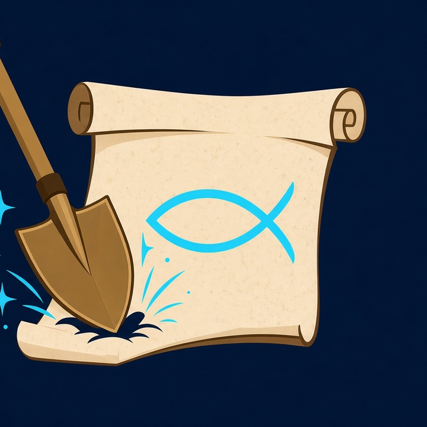

Bible archaeology map · phone prototype · build 20261001-af
OT + NT + Research claim + Contested digs + Apostle Martyrdom + Trade + Prophets + Miracles + optional PEF 1880 · no invented coordinates
Bible places · archaeology · Scripture
DigIntoScripture maps the places of the Bible and what archaeology has found there. Tap a pin to see the dig, the finds, and the Scripture it connects to. Each pin shows how strong the evidence is (strong, mixed, or weak), and travel and visitor notes come with a reminder to check before you go.
On first open, only Old Testament digs and New Testament digs are turned on. Use Layers (top right) to check off or start more layers. Search finds sites by modern and ancient names.
Hints are on by default for new visitors. Uncheck to turn them off (you can turn them back on here anytime). Long-press Discover (or Tours) for the category Tours sheet — four story categories of guided walks.
Only two layers are active — click here to check off or start more layers.
Guided tours by category · 5–12 stops · pan pin → panel → next · LSB refs on screen
Opens Google Maps with your stop order (driving). On-map line later. Tap pins, search hits, or Add this site.
No stops yet — add at least 2.